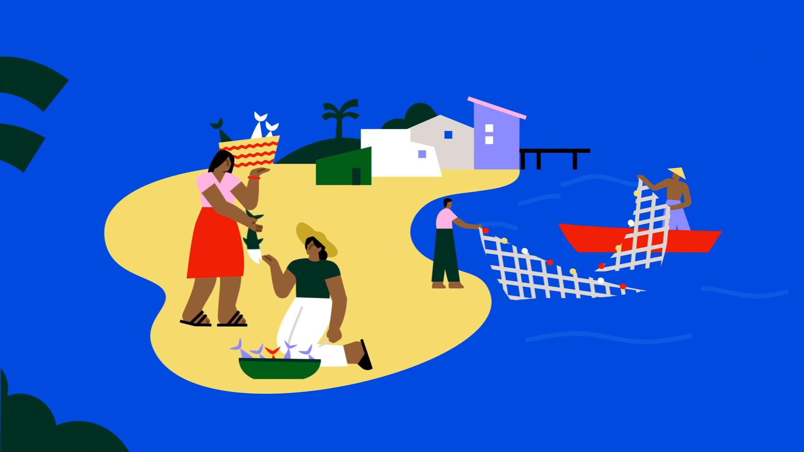
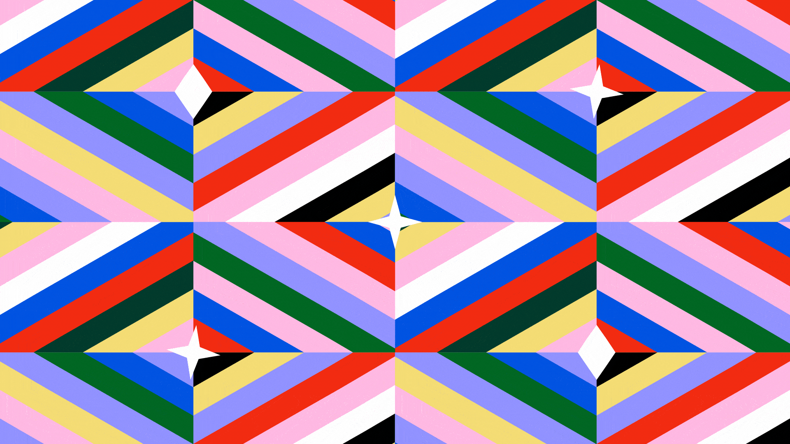
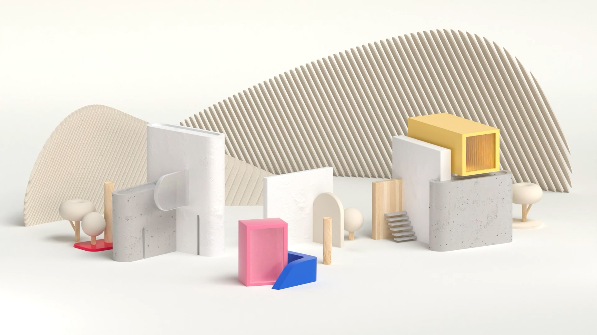
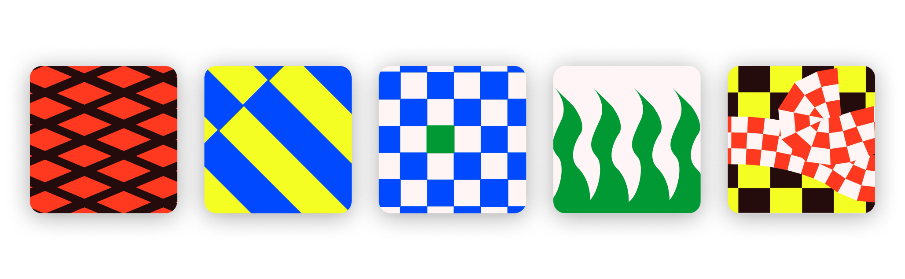

イタリア・トリノのilloは、自分たちの仕事を「ピザ・マルゲリータ」に例える。シンプルで、アイコニックで、色数が少ない――それが理想のプロジェクトの形だという。2012年にイレニア・ノタランジェロとルカ・ゴンネッリが設立し、現在は15名のチームでGoogle、Apple、Airbnb、Bloombergといった世界的ブランドのモーションとイラストレーションを担う。彼らのDNAはムナーリ、ソットサス、ヴィネッリというイタリアンデザインの巨匠たちにあると自ら語る。派手なのに、うるさくない。色数が少ないのに、動き出すと豊か。その制御の文法を、3つの仕事から解剖する。
色と形を「部品」にする――Thousand Currents（2024）
助成財団Thousand Currentsのモーションビデオは、illoの基本文法が最も分かりやすく出た仕事だ。アフリカ、アジア、ラテンアメリカの草の根団体を支援する組織の使命を伝えるため、デザインの軸に置かれたのは各地域の伝統に根ざした「パターン」である。土地ごとに異なる文様を織り合わせることで、「多様性の中の統一」を絵そのもので語る。色彩はクライアントのブランドパレットを出発点に、鮮やかさを引き上げて「illoパレット」へと変換したという。クリエイティブ・ディレクションはクリスティーナ・パスカーレ。

ここで注目したいのは、人物の描き方だ。顔の表情はほぼ描かれない。肌の色、衣服の平色、身体のシルエットだけで、誰が何をしているかが読める。ピクトグラムに近い記号化でありながら、寒々しさがないのは、色面の組み合わせと有機的な地形のラインが温度を運んでいるからだ（Museの分析）。

パターンは背景装飾ではない。場面転換も、地域の移動も、文様の切り替わりで運ばれる。つまりilloにとってイラストレーションとは「描くこと」である前に、組み合わせて運用できる「システム」を設計することなのだ。公式サイトのサービス一覧に「イラストレーション・システム」と「モーション・ツールキット」が並ぶのは、その姿勢の表明だろう。
2Dの文法を、そのまま3Dへ――Walliance（2023）
不動産投資プラットフォームWallianceのキャンペーンでは、illoは主戦場の2Dを離れ、3Dの都市を築いた。イタリア、スペイン、フランスの3か国で展開するブランド認知とリード獲得のための映像シリーズで、抽象と写実のバランスが課題だったという。着想源はイタリア未来派の画家ボッチョーニ。「絶えず成長する都市」を、セメント、ガラス、木、プラスチックといった不動産にまつわる素材の質感で組み立てた。色はブランドパレットを保ちながら彩度を落とした暖色寄りの版本に調整され、ミラノ、パリ、バルセロナのトラムやビルボードといったOOHにも展開された。

技法の核は、3Dになっても「部品の文法」を手放さなかったことだ。建物は平色の面と単純な幾何学の組み合わせに分解され、質感だけが写実に寄る。Forward Festivalのインタビューによれば、スタジオの3D制作はCinema 4DとOctaneを中心に回り、新しいショットはまず2Dのイラストレーションとアニメーションで検証してから3D化する。2Dの設計図が、そのまま3Dの設計図になる。メディアが変わっても文法が変わらないから、シリーズ化と多国展開に耐える。
動く「仕組み」そのものを作る――Araldica（2026）
最新作Araldicaは、illoの現在地を示す。2026年1月、スタジオ全員が「紋章学」を共通の自主ブリーフとして探求し、そこから生まれた映像はCavalryで構築され、OFFF Barcelonaの巨大なプロジェクションマッピングで上映された。紋章という「色と形の組み合わせで身分を伝える」古代の記号システムを、現代のモーション・ツールキットに翻訳したのだ。

ツールキットには2つの生成ツールが入る。1つは音を画像に変えるもので、楽曲のリズムやジャンル、長さが線の幅・高さ・回転を決め、手作業のキーフレームなしに音楽ごとに異なる映像を生む。ポッドキャスト用のモードでは話者が替わるたびに色が変わり、誰が話しているかが絵で分かる。もう1つは逆に、TouchDesignerで映像を4つの柱に分け、色を音階に対応させてAbletonで鳴らす「画像を音に変える」仕組みだ。1つの視覚システム（色・リズム・形）が、プレイリストのカバーからアプリ内プレイヤー、壁面のビデオマッピングまで、描き直しなしにスケールする。作るのは1本の映像ではなく、映像が生まれ続ける条件のほうである。
系譜――ムナーリから亀倉へ、そして記号の温度
illoが自称する系譜はムナーリ、ソットサス、ヴィネッリだ。ムナーリの「単純な形の組み合わせで無限のバリエーションを作る」発想は、そのままイラストレーション・システムの考え方に重なる。そしてこの「限定色＋平色＋余白」の原則は、亀倉雄策のモダニズムとも響き合う。マルゲリータの比喩――材料を絞るほど個性が立つ――は、亀倉が日の丸と平色で国家の顔を作った方法論と同型だ（Museの分析）。前号のGOO CHOKI PARが身体を記号化して「動きの感情」を運んだのに対し、illoは記号化した部品を「運用できるシステム」にまで育てる。記号の温度の上げ方は、色とリズムの設計で決まる。
勉強ポイント
- パレットを先に固定し、格上げする。 クライアントのブランド色をそのまま使わず、鮮やかさや彩度を調整して「自分たちのパレット」に変換してから全カットに適用する。色の統一は、作画の統一より先に決める。
- 1本の映像ではなく、部品の文法を作る。 パターン、キャラクター、転換のルールを再利用可能なシステムとして設計すれば、シリーズ化、ローカライズ、フォーマット展開にそのまま耐える。広告の継続案件ほど効く考え方。
- 自主ブリーフをR&Dの入口にする。 Araldicaは「紋章学」という遊びの探求から始まり、Cavalry習得とクライアント向けツールキットに育った。新ツールの習得は、案件ではなく自主制作のテーマと抱き合わせにすると続きやすい。
出典
- illo公式サイト「Studio」 https://illo.tv/studio
- illo公式サイト「Thousand Currents」 https://illo.tv/thousand-currents
- illo公式サイト「Walliance 3D campaign」 https://illo.tv/walliance2023
- illo公式サイト「Araldica | Motion system」 https://illo.tv/araldica-motion-toolkit
- Forward Festival「Interview with design studio illo」 https://www.forward-festival.com/article/interview-with-design-studio-illo
- STASH「Illo Builds Out the World of Walliance」 https://www.stashmedia.tv/walliance-brand-film-by-illo/